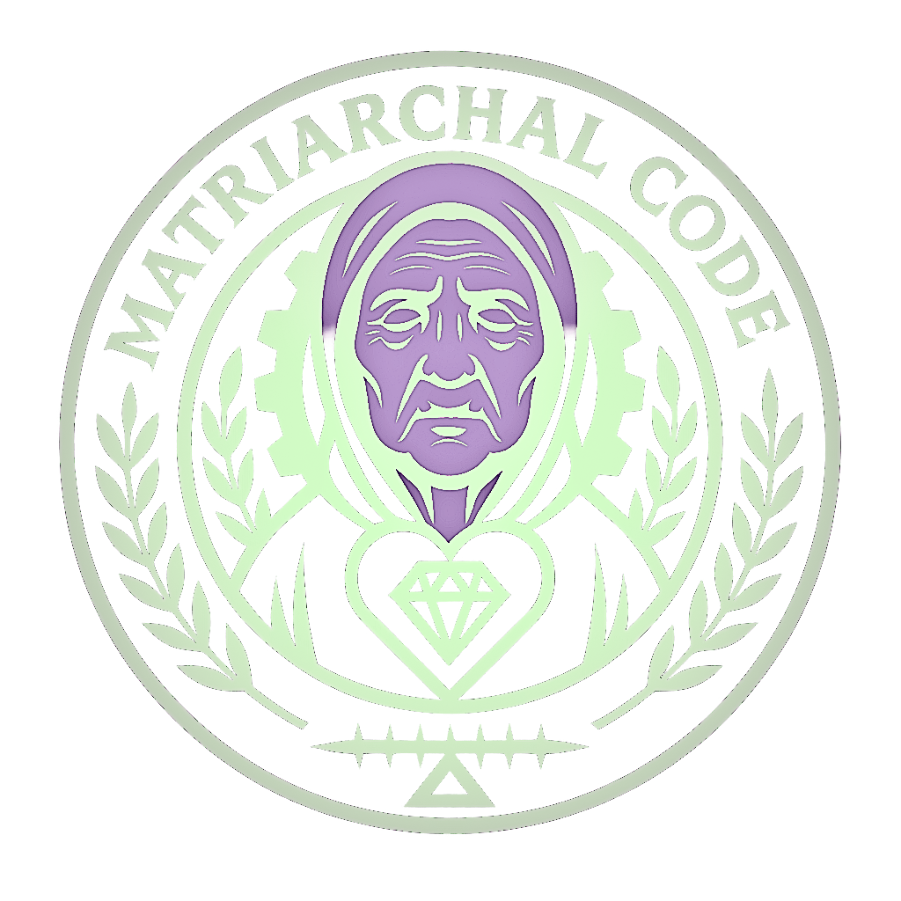

OPERATOR //
UNKNOWN
GUEST_SIGNAL
[ LOGOUT ]
G.R.I.D.
CONFESS
GATEWAY
// DAILY_PROTOCOL
LOADING...
SPEAK YOUR TRUTH
ENCRYPT IDENTITY (ANONYMOUS)
[ BROADCAST SIGNAL ]
Recent Echoes
Feed updates upon Architect approval...

RESTRICTED ACCESS
UNLOCK
ACCESS DENIED